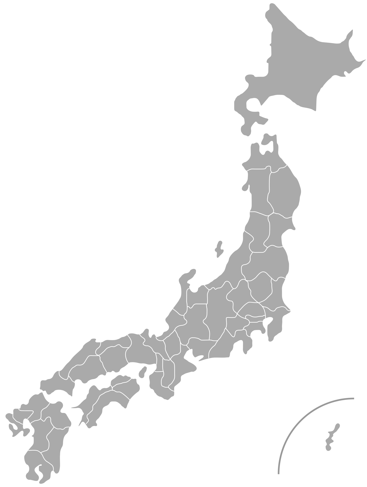

Entdecke Japans Katzeninseln – kleine, idyllische Eilande, auf denen freilaufende Katzen das Ortsbild prägen. Umgeben von Meer und ursprünglicher Natur bieten sie eine ruhige Auszeit vom Alltag. Besucher erleben hier entschleunigtes Inselleben, traditionelle Fischerdörfer und eine besondere Nähe zwischen Mensch, Tier und Landschaft. 🐾